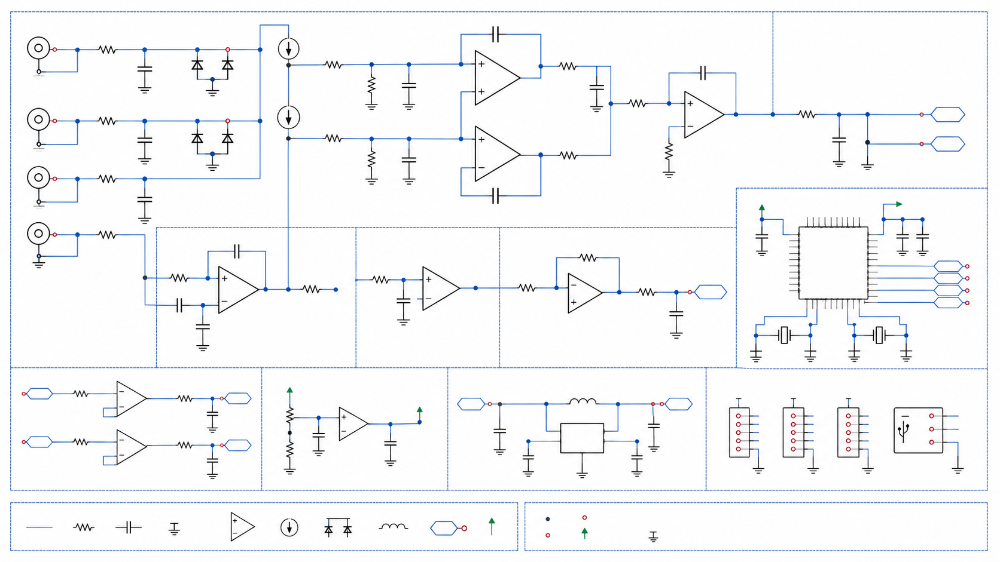

专注医疗电子
跨越生理信号与电子电路的交界处。我们将研究重点放在生命体征提取与精密仪器设计上。
Vision
从仿真走向物理世界，寻找极具性价比的生理电信号监测方案。
跨越生理信号与电子电路的交界处。我们将研究重点放在生命体征提取与精密仪器设计上。
打破高昂的商业医疗设备与科研仪器的壁垒。坚持分享硬件原理图、PCB 设计与基础处理算法。
崇尚动手实践与软硬件结合，通过 3D 打印结构件、定制数据采集板，从零开始搭建属于自己的独立生理监测实验台。
Projects
查看下方正在推进的硬件方向与后续计划，项目细节会随原型进展持续更新。

研发基于高精度微小恒流源的 16 通道阻抗数据采集板。

在医疗电子硬件与生物工程数据科学的交叉点，持续孵化新的开源实验原型与技术文章，敬请期待。
Join the journey
如果你关注医疗电子、硬件 DIY 或生物医学工程，欢迎在 GitHub 上交流想法、反馈问题，或一起完善开源原型。